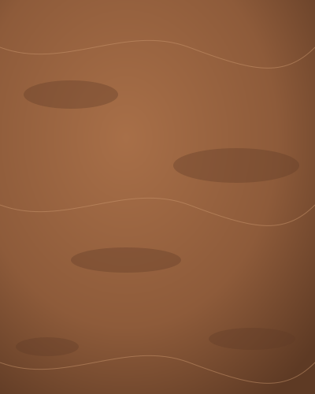
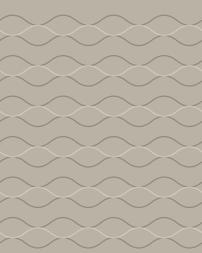
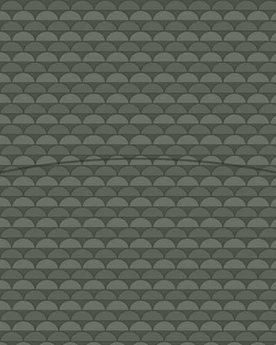
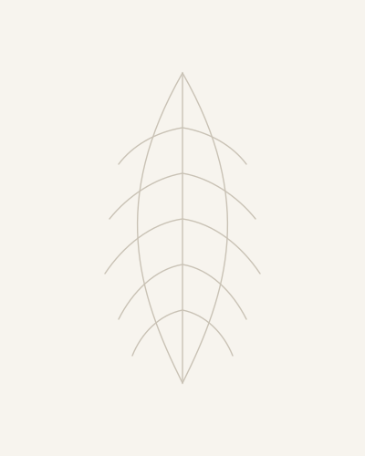
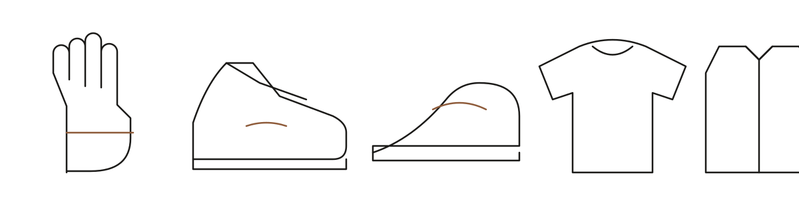

Reykjavík. First collection autumn 2027.
Materials as nature made them.
Fine Icelandic wool for everything you wear. Salmon leather for everything you walk and reach in. Silk dyed in heather and volcanic earth. Every piece carries the farm, the fjord and the field it came from.

Four materials, one island.
Nothing added that Iceland did not give. Each material has one job: wool clothes you, salmon leather carries you, earth-dyed silk marks the special piece, and eiderdown is the rare one.

Þel wool
The soft inner coat of a sheep bred unmixed for 1,100 years, around 20 microns fine. Spun on its own for knitwear that touches the skin, in undyed greys, browns and whites. Used for every garment.

Salmon leather
North Atlantic salmon skins tanned in Sauðárkrókur, a by-product of the fishing fleet. Stronger than calf at the same thickness, with a scale pattern no two skins share. Used for gloves, sneakers and shoes.
Earth-dyed silk and wool
Heather and birch tannin, fixed with iron-rich volcanic earth, cured in Arctic daylight. The same chemistry as China's gambiered silk, made with Icelandic plants and ground. Each length comes out different.

Eiderdown
Gathered by hand from nests the ducks have already left, on farms that have protected them since 1847. About three tonnes exist in the world each year. One hundred numbered pieces, each tied to a named farm.
The first collection.
Eight pieces. Wool for what you wear, salmon leather for hands and feet. Prices are planned retail and may change with final sourcing.

| Piece | Material | Planned price |
|---|---|---|
| Glove, þel-lined | Salmon leather, þel wool lining | €220 |
| Arctic sneaker | Felted þel upper, salmon leather overlays, natural rubber sole | €450 |
| Loafer | Salmon or wolffish leather | €590 |
| Fine crewneck | Þel wool, undyed | €390 |
| Cardigan | Þel wool, undyed | €490 |
| Earth-dyed scarf | Þel or silk, Icelandic plant and iron dye | €290 |
| Overcoat | Dense þel and tóg weave, tannin finish that sheds rain | €1,200 |
| Numbered vest | Eiderdown fill, þel shell, 100 a year | €1,900 |
How the earth dye works.
A process that cannot be hurried. Laboratory studies of the Chinese original show tannin and iron also make the cloth more water resistant, antibacterial and flame resistant; we will test our Icelandic version before we claim it.
Gather
Black heather and birch bark are collected in late summer and simmered into a tannin bath.
Dip
The wool or silk is dipped and dried in daylight, twenty times or more, deepening a little each pass.
Bury
Iron-rich volcanic earth is worked into the cloth. Iron and tannin bond and the colour turns from tan to deep brown-black.
Cure
Rinsed in cold river water and left in the Arctic light, where the surface settles into its final matte depth.
Every piece carries its passport.
Tap the tag inside the garment. See the farm that sheared the wool, the boat that landed the salmon, the field the earth came from, and a photograph of your exact piece before it left Iceland. No two pieces are alike, and the passport proves it.
A small label, built to last.
ÞEL starts in Reykjavík, where two million visitors a year can touch the materials, then sells directly to the United States and Europe online. The long-term engine is the earth-dyed cloth itself, sold by the metre to other designers.
pieces in the first pre-order run, funded by the people who order them.
Icelandic suppliers: a wool mill, a fish tannery, a plant-dye studio and an eiderdown farm.
first collection, after a year of yarn trials, dye tests and lab results.
Be among the first 200.
Leave your email and we will write when the pre-order opens. No newsletters, only the launch.
Replace hello@thel.is with your real address, or connect a form service, before launch.